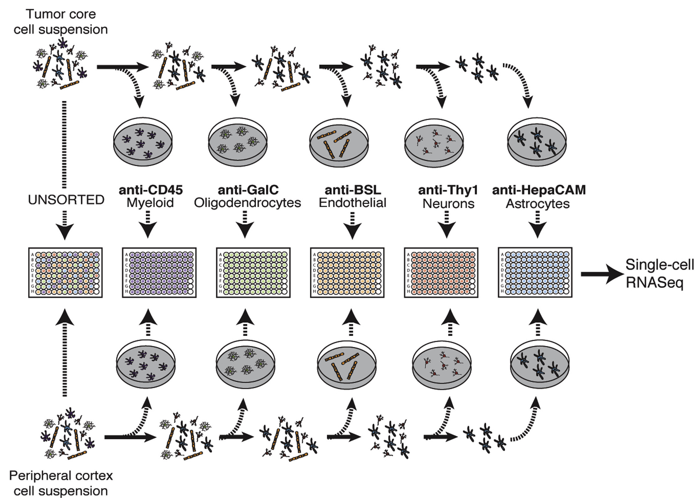

소개#
이 연습은 Alex’s Lemonade Stand 교육 모듈 에서 크리에이티브 커먼즈 저작자 표시 라이선스 하에 각색되었습니다.
이 연습의 목표는 세포 유형에 따른 마커 유전자의 발현을 조사하는 것입니다. 여기서 마커 유전자는 현장에서 세포 유형의 고전적인 지표로 간주되는 유전자로 간주합니다.
이러한 마커 유전자는 종종 FAC 정렬에 사용되는 유전자이며, 이는 Darmanis et al. Cell Reports. 2017.에서 수행된 작업입니다.
다음은 그들의 논문에서 가져온 그림으로, FAC 정렬 방법론에 대한 매우 간략한 개요를 제공합니다.
{kind=link}

방법에 대한 자세한 내용은 그들의 원고를 참조하십시오. 그러나 간단히 말해서, 이 연구는 FAC 정렬을 기반으로 한 세포 유형에 따라 교모세포종 종양의 세포를 분리합니다.
저자들은 SOX9 발현의 높은 수준을 포함한 여러 분석을 사용하여 신생물 세포를 확인했습니다. 신생물 세포는 종양 핵의 대부분을 차지합니다. 따라서 어떤 마커 유전자를 발현하는지 확인함으로써 이러한 세포가 어떻게 행동하는지에 대한 초기, 유전자별 아이디어를 얻을 수 있습니다.
이 연습의 최종 결과는 세포 유형별 마커 유전자의 평균 발현을 비교하는 히트맵이 될 것입니다. 또한 각 세포를 마커 유전자 발현 수준에 따라 색상으로 구분하는 주성분 산점도를 만들어 축소된 차원에서 마커 유전자 발현을 시각화할 것입니다.
전처리 연습에는 원시 발현 행렬 필터링 및 정규화가 포함됩니다. 분석 연습은 사전 처리된 발현 행렬에서 시작합니다. 이 두 연습 중 하나 또는 둘 다 수행할 수 있습니다.
전처리 연습#
원시 발현 행렬 로드#
이전에 data.zip 파일의 압축을 풀었으므로 데이터 디렉토리인 scRNA-python-workshop/content/data/glioblastoma.h5ad에 교모세포종 데이터가 있어야 합니다. 해당 파일을 로드하십시오.
import scanpy as sc
adata = sc.read("../data/glioblastoma_raw.h5ad")
과제: 품질 관리#
품질 관리 메트릭을 기반으로 필터링을 연습합니다. 유용한 코드 스니펫은 품질 관리 노트북을 다시 참조할 수 있습니다.
워크플로는 다음으로 구성되어야 합니다:
품질 관리 메트릭 계산
관심 있는 메트릭의 분포를 플로팅하고 합리적인 임계값을 결정합니다. Tabula Muris 데이터에 사용한 것과 동일한 컷오프 값이 이 데이터셋에 적합하다고 생각하십니까? 왜 그렇거나 그렇지 않습니까?
이러한 값을 사용하여 세포와 유전자를 필터링합니다. 몇 개의 세포가 제거되었습니까? 몇 개의 유전자가 제거되었습니까?
결과를 이웃과 비교하고, 왜 그러한 선택을 했는지 토론하십시오.
과제: 정규화#
이 데이터셋을 정규화하는 연습을 합니다. 유용한 코드 스니펫은 정규화 노트북을 다시 참조할 수 있습니다.
워크플로는 다음으로 구성되어야 합니다:
PCA를 사용하여 데이터 및 잠재적 교란 요인(예:
adata.obs['plate_id'])에 대한 시각적 개요 얻기라이브러리 크기 조정
유전자 발현 정규화
PCA를 사용하여 정규화가 데이터에 미치는 영향 이해
결과를 이웃과 비교하고, 왜 그러한 선택을 했는지 토론하십시오.
분석 연습#
데이터 로드#
위의 전처리 연습을 수행하지 않은 경우 이 전처리된 데이터에서 시작할 수 있습니다.
adata = sc.read("../data/glioblastoma_normalized.h5ad")
과제: 마커 유전자 추출#
이 연습에서는 특정 유전자와 데이터셋의 세포 유형 간의 발현을 분석하고자 합니다. 이미 FAC 정렬 방법에서 사용되었기 때문에 대조군으로 조사할 마커 유전자로 _SOX9_와 _CD45_를 추가했습니다. _MOG_는 다른 유형의 대조군으로 추가되었습니다. 즉, FACS에 사용되지 않았지만 수초 형성과 관련이 있으므로 희소돌기아교세포 표현형과 관련이 있는 유전자입니다.
아래에 시작한 유전자 목록에 관심 있는 다른 유전자를 추가하십시오.
선택한 유전자에 대한 정보를 얻으려면 GeneCard를 사용할 수 있습니다. 그런 다음 <FILL_IN_THE_BLANKS>를 바꿔서 시작한 것과 동일한 형식으로 이 데이터프레임에 선택한 유전자를 추가하십시오.
참고: 여기서는 Ensembl ID를 사용해야 합니다. 이를 다른 형태의 유전자 ID로 대량 변환하는 방법이 있지만, 이 연습에서는 몇 개의 유전자만 필요하며 이미 일부를 설정해 두었습니다.
# 유전자 기호와 관련 Ensembl ID를 포함하는 사전을 만듭니다.
markers = {
"Sox9": "ENSG00000125398",
"Cd45": "ENSG00000081237",
"Mog": "ENSG00000204655",
# 'GENE_SYMBOL_바꾸기': 'ENSEMBL_GENE_ID_바꾸기'
}
선택한 유전자가 필터링된 행렬에 없을 수 있으므로 몇 가지를 시도해야 할 수 있습니다.
in 연산자를 사용하여 찾고 있는 유전자가 필터링된 유전자 행렬에 있는지 확인할 수 있습니다(Ensembl 유전자 ID(예: ENSG...)여야 하며 따옴표 안에 있어야 함을 기억하십시오).
아래 구문을 사용하여 관심 있는 유전자가 필터링된 데이터셋에 있는지 확인하십시오:
print('ENSG00000125398' in adata.var.index)
과제: 마커 유전자의 평균 발현이 세포 유형에 따라 어떻게 비교되는지 조사#
sc.pl.heatmap()을 사용하여 이러한 마커 유전자가 세포 유형에 따라 어떻게 다른지 시각화하십시오.
어떻게 생각하십니까? 결과가 말이 됩니까?
과제: 마커 유전자 발현이 다른 세포 유형에 걸쳐 주성분 분석 점수와 어떻게 관련되는가?#
마커 유전자와 세포 유형의 관계를 조사하는 또 다른 방법은 이전에 했던 것처럼 PCA 플롯을 만드는 것이지만, 산점도 점을 마커 유전자 중 하나의 발현에 따라 색칠하는 것입니다.
sc.tl.pca()를 사용하여 정규화된 데이터셋에 대해 PCA를 수행합니다.
sc.pl.pca_scatter()를 사용하여 PCA 결과의 산점도를 만들고, 선택한 마커 유전자의 발현으로 세포를 색칠합니다.
이 플롯을 성공적으로 만든 후 마커 목록의 다른 유전자에 대해 이 작업을 반복합니다. 필요에 따라 더 많은 코드 청크를 만드십시오.